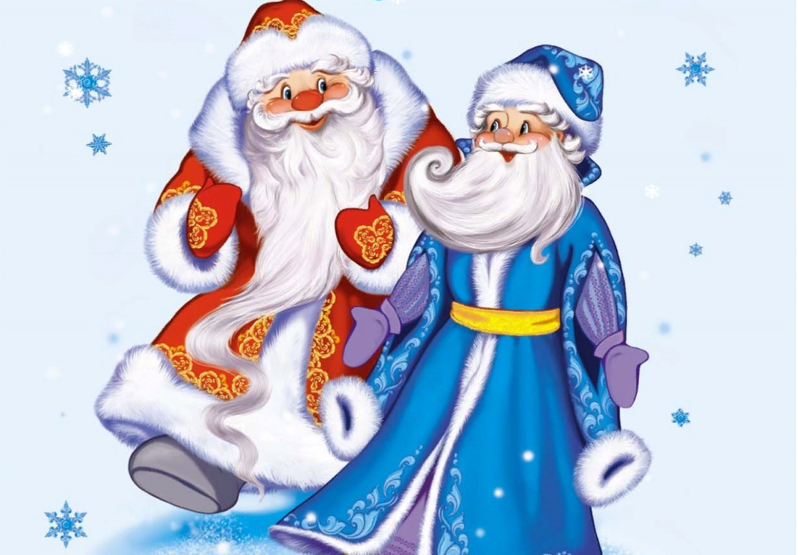

Два мороза

Гуляли по чистому полю два Мороза, два родных брата, с ноги на ногу поскакивали, рукой об руку поколачивали. Говорит один Мороз другому:
— Братец Мороз — Багровый нос! Как бы нам позабавиться — людей поморозить?
Отвечает ему другой:
— Братец Мороз — Синий нос! Коль людей морозить — не по чистому нам полю гулять. Поле все снегом занесло, все проезжие дороги замело; никто не пройдет, не проедет. Побежим-ка лучше к чистому бору! Там хоть и меньше простору, да зато забавы будет больше. Все нет-нет да кто-нибудь и встретится по дороге.
Сказано — сделано. Побежали два Мороза, два родных брата, в чистый бор. Бегут, дорогой тешатся: с ноги на ногу попрыгивают, по елкам, по сосенкам пощелкивают. Старый ельник трещит, молодой сосняк поскрипывает. По рыхлому ль снегу пробегут — кора ледяная; былинка ль из-под снегу выглядывает — дунут, словно бисером ее всю унижут.
Послышали они с одной стороны колокольчик, а с другой бубенчик: с колокольчиком барин едет, с бубенчиком — мужичок.
Стали Морозы судить да рядить, кому за кем бежать, кому кого морозить.
Мороз — Синий нос, как был моложе, говорит:
— Мне бы лучше за мужичком погнаться. Его скорее дойму: полушубок старый, заплатанный, шапка вся в дырах, на ногах, кроме лаптишек, ничего. Он же, никак дрова рубить едет... А уж ты, братец, как посильнее меня, за барином беги. Видишь, на нем шуба медвежья, шапка лисья, сапоги волчьи. Где уж мне с ним! Не совладаю.
Мороз — Багровый нос только подсмеивается.
— Молод, говорит, ты еще братец!.. Ну, да уж быть по-твоему. Беги за мужичком, а я побегу за барином. Как сойдемся под вечер, узнаем, кому была легка работа, кому тяжела. Прощай покамест!
— Прощай, братец!
Свистнули, щелкнули, побежали.
Только солнышко закатилось, сошлись они опять на чистом поле. Спрашивают друг друга:
— Что?
— То-то, я думаю, намаялся ты, братец, с барином-то, — говорит младший, — а толку, глядишь, не вышло никакого. Где его было пронять!
Старший посмеивается себе.
— Эх, — говорит, — братец Мороз — Синий нос, молод ты и прост. Я его так уважил, что он час будет греться — не отогреется.
— А как же шуба-то, да шапка-то, да сапоги-то?
— Не помогли. Забрался я к нему и в шубу, и в шапку, и в сапоги да как зачал знобить! Он-то ежится, он-то жмется да кутается, думает: - дай-ка я ни одним суставом не шевельнусь, авось меня тут мороз не одолеет. Ан не тут-то было! Мне-то это и с руки. Как принялся я за него — чуть живого в городе из повозки выпустил. Ну, а ты что со своим мужичком сделал?
— Эх, братец Мороз — Багровый нос! Плохую ты со мною шутку сшутил, что вовремя не образумил. Думал — заморожу мужика, а вышло — он же отломал мне бока.
— Как так?
— Да вот как. Ехал он, сам ты видел, дрова рубить. Дорогой, начал было я его пронимать: только он все не робеет — еще ругается: такой, говорит, сякой этот мороз! Совсем даже обидно стало; принялся я его ещё пуще щипать да колоть. Только ненадолго была мне эта забава. Приехал он на место, вылез из саней, принялся за топор. Я-то думаю: «Тут мне сломить его». Забрался к нему под полушубок, давай его язвить. А он-то топором машет, только щепки кругом летят. Стал даже пот его прошибать.
Вижу: плохо — не усидеть мне под полушубком. Под конец инда пар от него повалил. Я прочь поскорее. Думаю: «Как быть?» А мужик все работает да работает. Ему бы зябнуть, а ему жарко стало. Гляжу — скидает с себя полушубок. Обрадовался я. «Погоди ж, говорю, вот я тебе покажу себя». Полушубок весь мокрехонек. Я в него — забрался везде, заморозил так, что он стал лубок лубком. Надевай-ка теперь, попробуй! Как покончил мужик свое дело да подошел к полушубку, у меня и сердце взыграло: то-то потешусь! Посмотрел мужик и принялся меня ругать — все слова перебрал, что нет их хуже.
«Ругайся! — думаю я себе, — ругайся! А меня все не выживешь!» Так он бранью не удовольствовался. Выбрал полено подлиннее да посучковатее, да как примется по полушубку бить! По полушубку бьет, а меня все ругает. Мне бы бежать поскорее, да уж больно я в шерсти-то завяз — выбраться не могу. А он-то колотит, он-то колотит! Насилу я ушел. Думал, костей не соберу. До сих пор бока ноют. Закаялся я мужиков морозить.